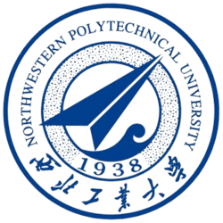

0%
KV-cache hit rate
0×
TTFT reduction (55s → 6.7s)
192→256
Stable concurrency
0×
Kernel speedup vs FP16
0 ms
TTFT · DeepSeek-V3.2 / 8×H200
0 req/s
Throughput @256 concurrency
LLM Inference Systems | GPU Optimization | Multimodal AI Research

Northwestern Polytechnical University · Top 1%92% cache hit · 8.3× TTFT (55s→6.7s) · concurrency 192→256
91 ms TTFT / 36 ms TPOT @32–64 · 13.16 req/s @256
Deployed for batched inference
4× memory · 3.2× vs FP16 · 2.1× vs naive FP4
Built 3-tier KV-cache offload (GPU→CPU→SSD) over Mooncake RDMA for Qwen3.5/3.6-27B on 4×A800-80GB — 92% hit rate and 8.3× TTFT reduction (55s→6.7s).
First author IEEE TNNLS paper on NVFP4-DiT — FP4 Triton kernels give 4× memory reduction and 3.2× speedup vs FP16.
M.Eng. Software Engineering @ NWPU (985/211), Top 1%, GPA 88/100. Chinese Government Scholarship.
School of Software
Northwestern Polytechnical University (NWPU) 985/211
Sep 2024 – Jul 2027 | GPA 88/100 (Top 1%)
Thesis PDF →School of Computer Science
Northwestern Polytechnical University (NWPU) 985/211
Sep 2020 – Jul 2024 | GPA 85/100 (Top 1%)
Thesis PDF →🎓 AWS Certified Machine Learning – Specialty · Professional Scrum Master I (PSM I) · Deep Learning Specialization (DeepLearning.AI)
EfficientNet+FFT + MFCC + Transformer with attention fusion for multimodal deepfake detection.
Thesis PDF →Apache Spark + CKKS homomorphic encryption, validated on a 10-node cluster: 95% privacy preservation, 20% performance gain.
Thesis PDF →Added unit tests for KV-cache eviction priority strategies in sgl-project/sglang (PR #31121) — directly relevant to production LLM serving.
View PR →Opened PRs and doc/typo fixes across multiple open-source projects (SGLang, SDKs, developer tooling), building a consistent public contribution history.
GitHub →LLM inference systems, KV-cache architecture, PD disaggregation, RDMA-based distributed serving on multi-GPU clusters.
Visual + audio + temporal fusion, deepfake detection, audio-guided video generation, cross-modal attention mechanisms.
Low-precision quantization (FP8/FP4), CUDA/Triton kernel optimization, GEMM acceleration for inference.
Open to collaboration on LLM serving, multimodal AI, and GPU optimization. Reach out via email or LinkedIn.
raihanrakib.143@gmail.com
/in/theraihanrakib
/theraihanrakibb
+86-17722362949
@theraihanrakib
@theraihanrakib